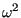

Next: Gravity distributed loading Up: Loading Previous: Facial distributed loading Contents

) and two points on the rotation axes. To obtain the force per unit volume the centrifugal loading is multiplied by the density. Consequently, the material density is required. The parameter OP=NEW on the *DLOAD card removes all previous distributed loads. It only takes effect for the first *DLOAD card in a step. A buckling step always removes all previous loads.